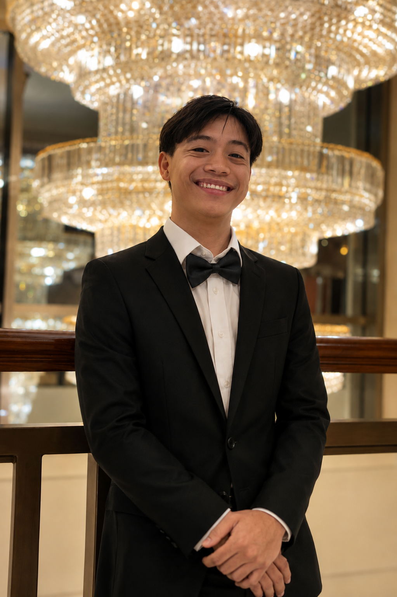

Interactive lessons customized for ambitious learners and professionals in the Philippines.
Accelerated Spanish learning for ambitious professionals and high-achievers.
Experience real-time, interactive learning powered by dynamic visual resources. Each session is recorded, allowing you to review complex topics at your convenience and receive immediate, tailored feedback.
Learn from both local Filipino instructors who understand your linguistic foundation and native Spanish speakers for authentic, real-world immersion.
Book classes that fit seamlessly around your professional life, university classes, or work shifts.
We offer private, 1-on-1 sessions that fit perfectly around your work shifts or school schedule, giving you 100% of the teacher's focus.
We make learning Spanish easy and enjoyable, with tailored courses constructed to guide you from absolute zero to bilingual fluency.
Build basic grammar, crucial vocabulary, and correct pronunciation rules. Start making sentences from day one.
Learn more →Boost your speaking confidence, break through fluency plateaus, and master daily real-world Spanish.
Learn more →Prepare thoroughly for the official DELE certificate with targeted mock exams and strategic oral practices.
Learn more →"Our Mission: To bridge cultures and open global career opportunities for Filipinos through high-quality, practical, and confidence-building Spanish education."
¡Hola! I'm Erica, The Founder and the Lead Instructor of Go Spanish. I believe that anyone can learn Spanish with the right guidance, consistent practice, and a positive learning environment. My goal is to help you build confidence, communicate naturally, and enjoy every step of your language-learning journey. I also offer complimentary review classes to provide additional speaking practice, reinforce what you’ve learned, and help you prepare for career opportunities where Spanish is an advantage.
Whether you’re starting from zero or looking to improve your skills, I’ll make sure every lesson is interactive, practical, and worthwhile. Let’s achieve your Spanish goals together!
Learn from certified, passionate Spanish instructors dedicated to your success.
I aim to keep a relaxed, pressure-free environment. I am known for being a very patient and friendly teacher, focused on creating comfortable lessons where it allows you to learn Spanish at your own pace!
Hola! I am passionate about helping students develop confidence in speaking Spanish through engaging and interactive lessons. I strive to create a supportive and encouraging learning environment where students feel comfortable practicing the language and progressing toward their goals. Whether you're learning Spanish for travel, work, academic purposes, or personal growth, I am committed to making each lesson enjoyable, practical, and effective.
¡Hola! I’m a passionate instructor dedicated to helping students build confidence in speaking, reading, writing, and understanding Spanish. My lessons are interactive, personalized, and tailored to each student’s goals, whether you’re learning for travel, work, school, or personal growth. I strive to create a supportive and engaging environment where learning Spanish is both effective and enjoyable.
Hola! I am a licensed professional teacher with a background in education, passionate about helping students build confidence and fluency in Spanish. I bring both formal teaching experience and real-world bilingual communication skills into every lesson. Whether you're learning Spanish for travel, work, or personal growth, I am committed to creating a supportive, engaging, and effective learning environment tailored to your goals.
I strive to create a fun, relaxed, and welcoming classroom where learning Spanish feels enjoyable—not stressful. My goal is to make every student feel comfortable and confident, no matter their level. You'll often hear me remind my class to smile, enjoy the process, and never be afraid to make mistakes because that's how we learn. My classroom is a safe space where everyone is encouraged to participate at their own pace. I believe that when students feel supported, respected, and comfortable, they learn more effectively. Together, we'll build your Spanish skills in a positive environment where you can ask questions, practice confidently, and have fun every step of the way.
I am a conversational Spanish speaker with nearly a decade of experience using the language in real-life, day-to-day situations. I am passionate about helping students build confidence in speaking Spanish through practical, engaging, and interactive conversations. My approach focuses on creating a relaxed and supportive environment where learners feel comfortable practicing without fear of mistakes. Whether you're learning Spanish for travel, work, or personal growth, I aim to make each session enjoyable, relevant, and easy to apply in everyday life. Together, we will focus on natural communication so you can speak Spanish with confidence and ease.

I am a supportive and enthusiastic educator with a genuine passion for helping students learn Spanish. My focus is on building confidence through engaging conversations and practical activities, so learners feel prepared to use Spanish in everyday situations. I aim to make the learning experience enjoyable, empathetic, and effective.
I aim to keep a relaxed, pressure-free environment. I am known for being a very patient and friendly teacher, focused on creating comfortable lessons where it allows you to learn Spanish at your own pace!
I aim to keep a relaxed, pressure-free environment. I am known for being a very patient and friendly teacher, focused on creating comfortable lessons where it allows you to learn Spanish at your own pace!
From absolute beginner to confident, natural speaker. Explore our structured path to Spanish fluency.
Your starting point. Learn essential greetings, the alphabet, pronunciation rules, basic numbers, and how to introduce yourself and order food in the present tense.
Build your daily conversational skills. Learn to describe routines, go shopping, navigate a city, ask for directions, and introduce basic past tense verbs.
Express yourself with more freedom. Learn how to tell stories about past events smoothly, share your future plans, express personal opinions, and get introduced to the subjunctive mood.
Navigate complex everyday and professional scenarios. Refine your command of advanced grammar, learn to debate topics, express hypothetical ideas, and practice business Spanish contexts.
The ultimate level. Focus on nuance, cultural idioms, accent refinement, and natural conversational flow so you can express complex, abstract thoughts effortlessly.
Let's discuss your goals and find the perfect path for you.
Register Now